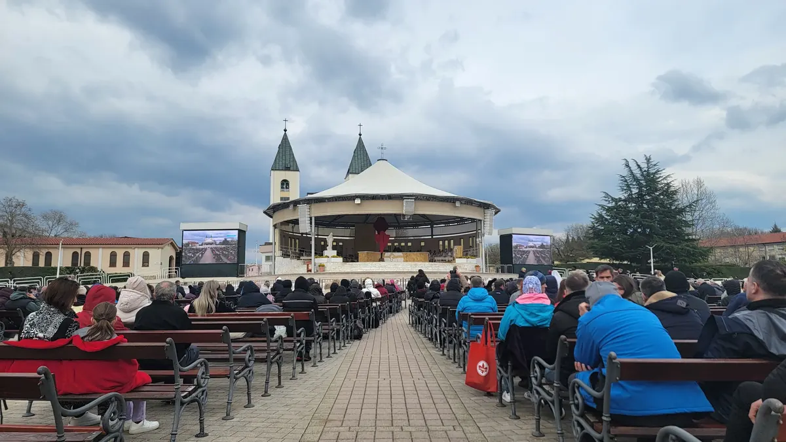
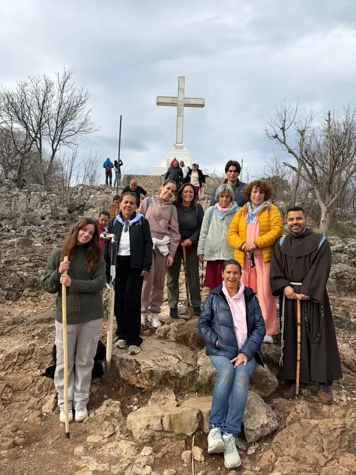

There are places we visit and places that remain in our hearts forever. Medjugorje, in Bosnia and Herzegovina, is one of them. From the simplicity of its streets and mountains to the prayer that brings together pilgrims from so many countries, everything seems to remind us that God can be at the center of our lives.
I have taken children, teenagers, university students, and people of different professions and ages to Medjugorje. Many arrive without knowing exactly what to expect. But as they experience those days, sooner or later a question arises: why does one feel such a special peace here?
A life that puts God back at the center
One of the first things that surprises us is the rhythm of prayer. The evening program at St. James parish brings pilgrims together to pray the rosary, celebrate the Holy Eucharist, and take part in other moments of prayer, such as the veneration of the cross, adoration, or prayer for healing. Together, these can amount to nearly three hours devoted to God.
As we experience it, we begin to imagine a life organized around what is essential: working, meeting the Lord, and then returning home to spend time with family. It is not about abandoning our responsibilities, but about discovering that when God takes His rightful place, there is also room for work, prayer, and family life.
In this simple place, that rhythm creates an atmosphere of recollection and peace. It is more than something observed from the outside: many pilgrims feel that prayer invites them to reflect on how they are living and on the place God occupies in their daily lives.
The Eucharist is the heart
In Medjugorje, Jesus is at the center. Marian devotion does not displace Christ; it leads us to Him. Mary, like a mother who teaches with simplicity and closeness, reminds us of the path the Gospel already shows us: to listen to the Word of God and put it into practice.
The Church teaches that the Eucharist is the source and summit of Christian life. In it we receive Jesus, truly present. That is why every devotion and every spiritual experience should help us draw closer to Christ and to the sacramental life. In Medjugorje, Holy Mass and Eucharistic adoration hold a central place.

Mary’s message does not lead us away from the Gospel. It encourages us to live it. For someone just beginning to approach the Word, her invitations may feel like those of a mother who explains with patience and love. And for someone who already knows it, they can be a call to live it more deeply.
The gift of returning to confession
Another striking experience is seeing so many priests available to hear confessions and long lines of pilgrims waiting their turn. There I have seen people who had not been to confession for six, ten, or even twenty years and who, after a long time, found the courage to approach the sacrament.
Sometimes fear, shame, or the time that has passed leads a person to keep postponing that encounter. The atmosphere of prayer, the closeness of the priests, and the desire to return to God can help them take the first step. For many, confession becomes one of the most moving moments of the pilgrimage: a return to the Father’s merciful embrace.
Climbing the mountain: a path of encounter
Apparition Hill, Podbrdo, is also an experience that stays in our memory. The climb takes effort, and each pilgrim experiences it in their own way. The terrain, the stones, and the fatigue invite us to move forward patiently, step by step.
For many, that ascent becomes an image of the inner journey: sometimes it is difficult, but we keep moving forward in search of God. Amid silence and prayer, each person finds their own pace and brings before the Lord whatever they carry in their heart.
For me, the Stations of the Cross on Križevac are among the most demanding I have climbed. The effort of going up and down the mountain allows us to accompany Jesus in His Passion in a very concrete way. Each station invites us to stop, contemplate, and ask ourselves what we can learn from the love of Christ, who gave His life for us.
Each step on Križevac can become a prayer and a surrender to Jesus of whatever weighs on the heart: the questions, worries, and intentions that each pilgrim carries with them.

The fruits we bring home
In the testimonies of those who make the pilgrimage, Jesus appears at the center again and again. Prayer, confession, the Eucharist, and the effort of climbing the mountains can touch the heart in different ways. For some, it is the beginning of a return to faith; for others, a call to deepen their prayer life or discern a vocation.
The fruits do not remain in Medjugorje. The peace experienced there takes on meaning when we return home and try to live differently: giving more time to God, seeking reconciliation, participating in the Eucharist, and sharing our faith with our family.
That is why, when people ask us what makes Medjugorje special, I think of that invitation: visiting the place is not enough; we are called to carry Medjugorje in our hearts. It does not mean that we should all move there, but that we should allow the prayer and the encounter with Jesus we experienced during the pilgrimage to continue bearing fruit wherever we are.
Medjugorje is a place that must be experienced. A simple place that surprises us, invites us to pray, and awakens hope. For me, that hope means discovering that a life with God at the center is indeed possible, and that we can begin to live it in our own homes.
Would you like to live this experience of faith? Explore our pilgrimages to Medjugorje and discover how to prepare your journey to encounter Jesus, with Mary by your side.